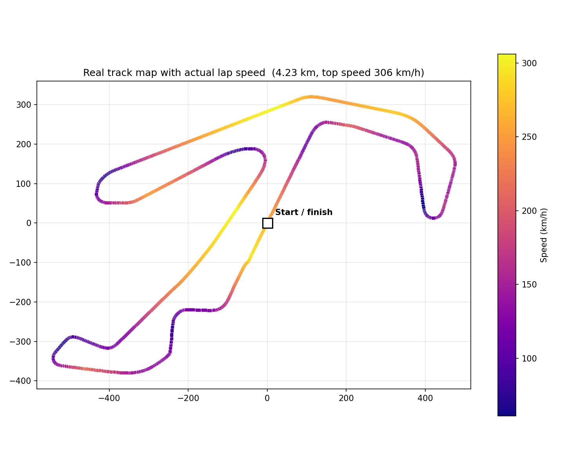
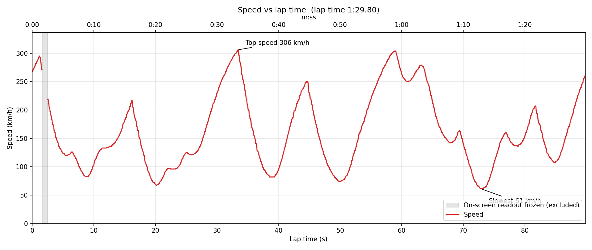
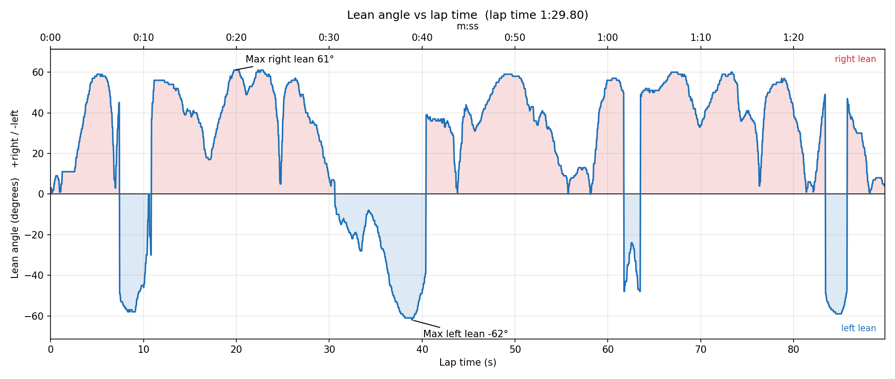

Misano World Circuit — onboard lap
Every number on this page came from a single onboard camera. No sensors, no GPS — just the speed and lean-angle readout burned into the footage, read frame by frame and turned into numbers.
The three charts below break the lap down three ways: where the bike went, how fast, and how far over. Together they turn 90 seconds of onboard footage into a picture of what an actual MotoGP lap looks like.

This is the real Misano World Circuit — 4.23 km, traced from an official track diagram rather than estimated. The lap's actual speed is draped onto that shape, colour-coded from slow (dark) to fast (bright).
The dark patches land exactly on Misano's known tight spots — Curva del Rio, Variante del Parco, Curva Tramonto — and the brightest stretch is the long straight up to Curvone, where the bike hits its top speed.

Every peak is a straight, ridden flat out; every valley is a corner, braked hard for. A MotoGP lap is really a string of these accelerate–brake cycles — sixteen of them here, matched to the sixteen corners Misano has.
The steepest drops are the heaviest braking zones, where the bike sheds well over 150 km/h in a couple of seconds before tipping into the next corner.

The onboard readout only ever shows a number — it doesn't say left or right. That direction was worked out separately from the footage itself, so this chart can show signed lean: positive for right, negative for left.
Misano leans right more often than left — ten corners to six — which is exactly what the extra time spent above the zero line shows. Every dip back to zero is the bike standing back up for the next straight.